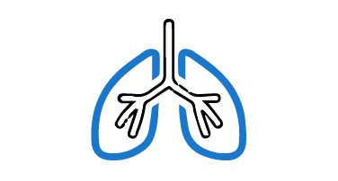
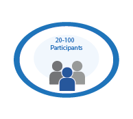
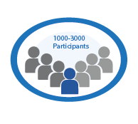

Participating in a clinical trial is easy with PRX Research
Getting started with a clinical trial is easy! We offer numerous clinical trials in different specialties. Please contact us to see what we're offering. We'll ask you some questions to determine what studies you're eligible for, and if there's a study you might be eligible for, we'll schedule an appointment with one of our physicians.
Visit our site and get a complimentary physical exam. We'll answer any questions you have about participating in one of our clinical trials.
Participating in the clinical trial can begin once you've been considered eligible and agree to participate in the study procedures.

Our team is committed to clinical research that tests the latest medical treatments, striving for healthcare breakthroughs. We prioritize safety and integrity from hypothesis to trial completion, aiming for innovations that enhance patient health.
Internal medicine is the medical specialty dealing with the prevention, diagnosis, and treatment of adult diseases. Internists are skilled in the management of patients who have undifferentiated or multi-system disease processes.
PRX Research is at the forefront of clinical research, diligently testing new treatments to bring about breakthroughs in patient care. We uphold the highest safety and ethical standards, ensuring that our pioneering work consistently leads to improved health outcomes.

At PRX Research, our Pulmonary Medicine division is dedicated to advancing the treatment of respiratory diseases through clinical research. We are committed to uncovering new therapies that improve lung health and patient well-being.

Cardiology is a branch of medicine that deals with disorders of the heart and the cardiovascular system. The field includes medical diagnosis and treatment of congenital heart defects, coronary artery disease, heart failure, valvular heart disease and electrophysiology.
At PRX Research, we lead in Gastrointestinal (GI) and Hepatology research. Our expert team is dedicated to advancing GI and liver health through innovative treatments and diagnostics. Join us in improving patient care in these vital medical fields.
PRX Research is a leader in Endocrinology research, dedicated to advancing knowledge and treatments for hormone-related disorders. Join us in improving patient care in this vital medical field.
Psychiatry is the medical specialty devoted to the diagnosis, prevention, and treatment of mental disorders. These include various maladaptation related to mood, behavior, cognition, and perceptions.
Neurology is a branch of medicine dealing with disorders of the nervous system. Neurology deals with the diagnosis and treatment of all categories of conditions and disease involving the brain, the spinal cord and the peripheral nerves.
PRX Research leads in innovative medical devices. Our expert team is dedicated to creating cutting-edge technologies that enhance patient care. Join us in shaping the future of healthcare through groundbreaking device research.

PRX Research leads in Geriatrics research, dedicated to improving the well-being of older adults. Our expert team focuses on innovative solutions and tailored care for the unique needs of the elderly.
PRX Research excels in Lab Collection Studies, foundational for groundbreaking research. We meticulously gather and analyze data in controlled labs, contributing to advancements in medicine and technology.
Providing Physicians from Varying Therapeutic Areas to serve as Clinical Research Investigators
Providing Access to Insights on Real-Time Data and Updates to Ensure Compliance
Engaging The Local Community, Physicians, and Patients for Effective and Robust Recruitment
Providing Infrastructure and Expertise to Ensure Better Data Quality in Real Time
Clinical trials have four phases, or steps, in the clinical research process. Here's what those phases mean:

Phase 1Researchers test a drug or treatment in a small group of people (20-100) for the first time. The purpose is to study the drug or treatment to learn about safety and identify side effects.
The new drug or treatment is given to a larger group of people (100-300) to determine its effectiveness and to further study its safety.

Phase 3The new drug or treatment is given to large groups of people (1,000-3,000) to confirm its effectiveness, monitor side effects, compare it with standard or similar treatments, and collect information that will allow the new drug or treatment to be used safely.
After a drug is approved by the FDA and made available to the public, researchers track its safety in the general population, seeking more information about a drug or treatment's benefits, and optimal use.